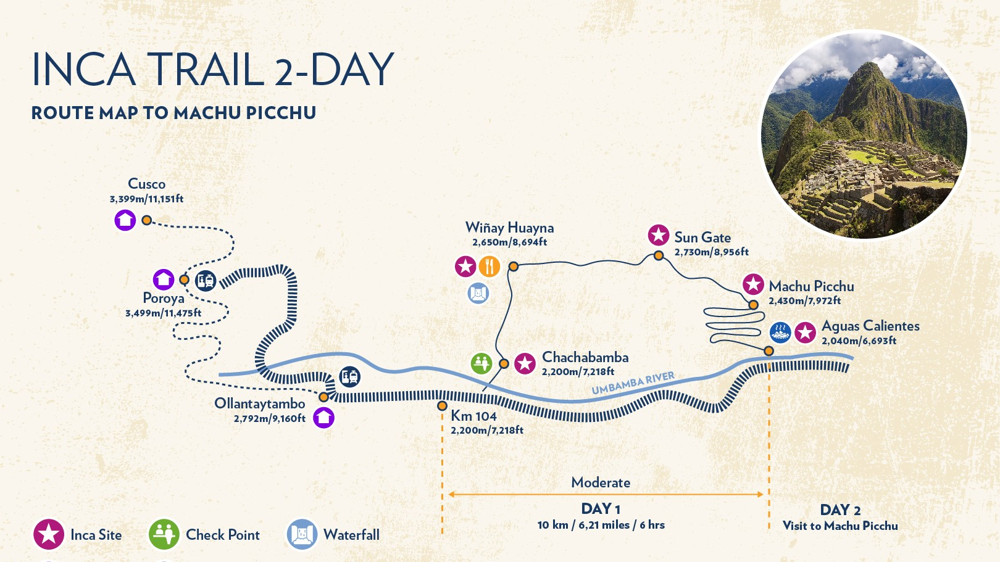

Why is it important to pack properly?
Before you begin packing, it's a good idea to get to know the place that you are visiting, and specifically the very trail you have chosen. Thoughtfully choose your trail and the amount of time you will be spending there. Whether it is 2, 3 or 4 days makes a huge difference!
Your preparation is absolutely crucial for your journey and your overall experience: If you have done a poor preparation and packing, then that will most likely complicate and degrade the quality of your experience. To avoid just that, we have made a checklist with our recommendations, where you can also add your own personal items on the very same checklist and cross off, as you pack and prepare! This will make your preparation for the journey more smooth and secure, as well as ensuring that you have all the things needed in your backpack for the hike.
Map and information on routes


Read about the different routes
Route 1; Shorter Inca Trail
Distance: ~13km.
Number of Days: 1 - 2 days, can be extended to 2 - 3 days for trekkers who would like to spend an additional day at Machu Picchu.
Difficulty: short and easy, no high altitude passes.
Route 2; Lares Trek
Distance: ~33km
Number of Days: 3 - 4 days, can be extended or shortened depending on route variation and number of days spent in Machu Picchu
Difficulty: A fair bit longer but relatively easy, with one tough pass
Route 3; Salkantay Trek
Distance: ~55km
Number of Days: 4 - 5 days when trekking around 12km a day
Difficulty: long trekking days and high altitude (~4,600m (El Passo – Salkantay Pass))
Route 4; Vilcabamba Trek
Distance: ~62km
Number of Days: 4-5 days when trekking around 16km a day
Difficulty: arguably the most difficult trek to Machu Picchu, long trekking days and many high passes
Read about the different routes
Shorter Inca Trail ↓
Distance: ~13km.
Number of Days: 1 - 2 days, can be extended to 2 - 3 days for trekkers who would like to spend an additional day at Machu Picchu.
Difficulty: short and easy, no high altitude passes.
Click here for a link to the route.
Lares Trek ↓
Distance: ~33km
Number of Days: 3 - 4 days, can be extended or shortened depending on route variation and number of days spent in Machu Picchu
Difficulty: A fair bit longer but relatively easy, with one tough pass
Click here for a link to the route.
Salkantay Trek ↓
Distance: ~55km
Number of Days: 4 - 5 days when trekking around 12km a day
Difficulty: long trekking days and high altitude (~4,600m (El Passo – Salkantay Pass))
Click here for a link to the route.
Vilcabamba Trek ↓
Distance: ~62km
Number of Days: 4-5 days when trekking around 16km a day
Difficulty: arguably the most difficult trek to Machu Picchu, long trekking days and many high passes
Click here for a link to the route.
We've made a checklist for you
But feel free to customize it
Below on the left side, you will find 4 different checklists related to the selected route. There are both our recommendations for food and hydration, according to the choosen route, and what gear is needed. On the right side you find the personalized checklist, where you can add items from our recommended checlist, simply by clicking on the item you want. You can also add stuff that you might find necessary, and if you added an item, but don't need it anyway, just dobbleclick the item, you want removed. When you finished it simply download the list to your device, and if you want to modify it later, click the 'Choose File' button, and upload the downloadet list from your device. Enjoy!
Checklist for Inca Trek
Food and hydration
If you are planning on hiking for 2 days, and with 7 hiking hours per day:
- 1.4kg + 500g - 2kg + 500g of food
- 3.5L + 500mL of water
- Camping stove
- Camping pot/cutlery
- Garbage bag
- Headlamp
Generel hiking essentials
- Light outerwear
- Long-sleeve top
- Rain coat/jacket
- Hiking boots
- Extra clothes
- Appropriate backpack
- First Aid Kit
- Sleeping bag and blanket
- Sun protection
- Personal identification paper
- Pocket knife
- Flashlight
- Navigation tools
- Sun protection
For a full day of hiking, aim to carry 700 grams to 1 kilogram of food per day, with a small surplus. To maintain energy levels on a hike, plan to consume approximately 200-300 calories every hour. Plan to bring 1 liter of water for every two hours of moderate hiking. On this trail, you will be passing through some villages where you can refill.
Your personal checklist
Here you can write your own items and add them to your personal list. To mark the item as packed, simply click on the item. Didn't need the item anyways? Double click the item to remove it from the list again.
Here you can download the list and upload it again when you visit us later!
Upload your saved .txt file here to make your list appear again.